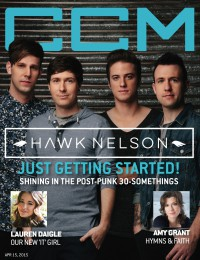

CMnexus
:
Contemporary Christian culture, music, and media.
Browse Magazines
Browse Profiles
cmnexus.org
CM
nexus
→
Profiles
→
A
→
Grace S. Aspinwall
Grace S. Aspinwall
Writing Credits: 5 of 5
< -- Previous
Next -- >
1
2
3
4
5
Writing credits listing
15 Feb 2015 in
CCM Digital
I Am They
-
I Am They
Derek Minor
-
Empire
1 Mar 2015 in
CCM Digital
The Brilliance
-
Brother
Carman
-
Beginnings
Sarah Brusco
-
The Woven Whisper
15 Mar 2015 in
CCM Digital
Third Day
-
Lead Us Back: Songs of Worship [Deluxe Edition]
Casting Crowns
-
Glorious Day: Hymns of Faith
NewSong
-
Faithful
1 Apr 2015 in
CCM Digital
Chris August
-
The Maker
NF
-
Mansion

15 Apr 2015 in
CCM Digital
"Rock Solid"
Hawk Nelson
Lauren Daigle
-
How Can It Be
Derek Johnson
-
Real Love
1 May 2015 in
CCM Digital
Audio Adrenaline
-
Sound of the Saints
Jon Guerra
-
Little Songs
15 May 2015 in
CCM Digital
"Trail Blazer"
Christy Nockels
Matthew West
-
Live Forever
Shane & Shane
-
The Worship Iniative
15 Jun 2015 in
CCM Digital
"The Voice"
Matt Maher
Writing Credits: 5 of 5
< -- Previous
Next -- >
1
2
3
4
5
CMnexus
(noun)
The magazine index
of modern music
and Christianity
© 2011 CMnexus. Last updated September 2019.
Contact:
Rants and other correspondence to:
editor -AT- cmnexus
-DØT- org
About